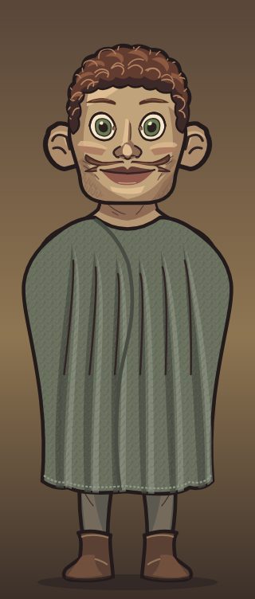
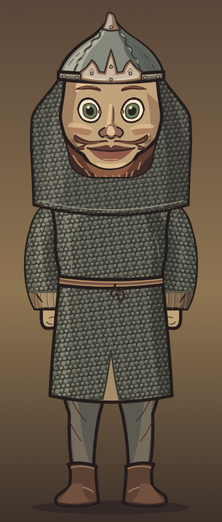
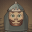
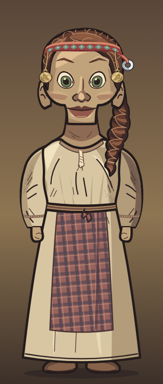
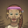
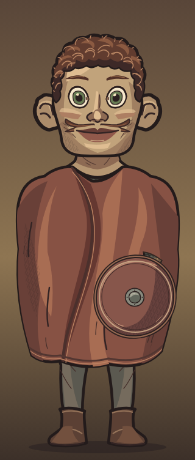

Пояс и сумка под плащомtravel_wool_cloak 32 × 32До и послеДоПослеДоПослеТот же персонаж с другой настройкой
Борода под бармицейnw_duboshin_helm 32 × 32Тот же персонаж с другой настройкой
Коса, очелье и колтыrus_diamond_band 32 × 32До и послеДоПослеДоПослеТот же персонаж с другой настройкой
Щит и рукавица под закрытым плащомnovgorod_george 32 × 32Тот же персонаж с другой настройкой